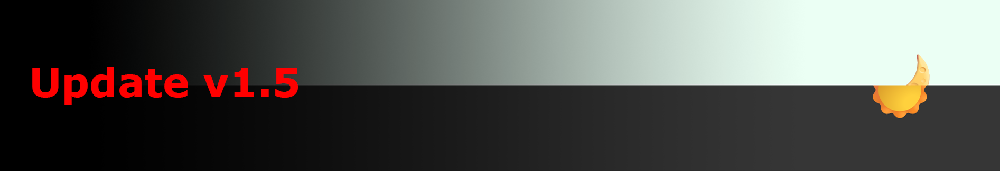
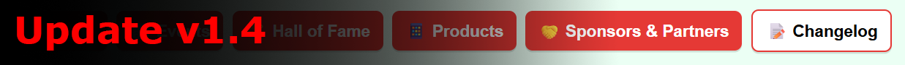

This is a fix for the issue with the social buttons not working. We have added third-party embeds for better integration, for our top socials.
Adds third-party embeds for YouTube, X, and Discord
Fixed the Social buttons not working for all other socials
Thanks for visiting and stay tuned!
#minor
v1.8.4 [8/3/26] - Hall of Fame Formatting Fix
This update fixes a formatting issue on the Hall of Fame due to changing the framework of the articles.
Thanks for visiting and stay tuned! P.S. We are aware of an issue with the Socials buttons, and are working on a fix.
#minor
v1.8.3 [8/3/26] - Savindu's Hall of Fame Entry
Savindu Handapangoda's achievement has been added to the Hall of Fame.
Thanks for visiting and stay tuned! P.S. We are aware of an issue with the Socials buttons, and are working on a fix.
#minor
v1.8.2 [7/3/26] - Button to Spotify Account
This update adds a button to our Spotify account in the Socials section, and some other small updates.
Added a button to our Spotify account in the Socials section on the homepage
Added alt text for images in the buttons in the Socials section
Thanks for visiting and stay tuned!
#minor
v1.8.1 [6/3/26] - Sponsors & Partners Refinement
This is a small update that changes the name of Sponsors & Partners to just "Partners" for simplicity and consistency, and to support mobile optimisation.
Thanks for visiting and stay tuned!
#major
v1.8 [6/3/26] - Social Buttons Upgrade
We have delivered a major update to the Socials section on our homepage.
Created a new framework for the social buttons for greater customisability
Changed the background colour of the buttons from white to red
Enlarged and centered the social buttons
Removed the wording from the social buttons
Changed the background colour of the social buttons on hover from yellow to a light pink
Thanks for visiting and stay tuned!
#minor
v1.7.3 [6/3/26] - Page Name Changes
We have changed the names of most of our pages. This doesn't affect their visible title, but makes it more simplified when entering a URL.
Changed "Index.html", "Events.html" and "Changelog.html" to be all lowercase, making it easier to navigate with a direct URL.
Changed "Apps_and_Other_Products.html", "Hall_of_Fame.html" and "Sponsors_and_Partners.html" to "products.html", "hall-of-fame.html" and "partners.html" respectively, adding shorter and more consise titles and keeping it in line with standard URL practices
Thanks for visiting and stay tuned!
#minor
v1.7.2 [5/3/26] - Fix for Search Filter Tip
This update fixes the formatting of the tip under the search bar.
Thanks for visiting and stay tuned!
v1.7.1 [5/3/26] - Link to Source Code
This update adds an easier way to find our source code, and fixes some other issues.
Added a link to find the source code in the footer of every page
Added a tip under the search bar for users to easily filter changelog entries
Removed an unnecessary break in the Socials section
Thanks for visiting and stay tuned!
#major
v1.7 [5/3/26] - Move to GitHub
We have moved our codebase to GitHub for better collaboration and version control. Our website is now open source! You can find the code at https://github.com/JamexCEO/jamex. We will no longer be updating our Netlify version, but we will continue to keep it up for as long as possible. You can continue to get updates at the all new GitHub site: https://jamexceo.github.io/jamexwebsite (this version).
Thanks for visiting and stay tuned!
#minor
v1.6.1 [4/3/26] - Search Improvements
This is a small update to improve the search functionality on the Changelog page.
Added a "No results found" message when no changelog entries match the search query
Added highlighting for search results in both light and dark modes
Changed the border colour of the search bar to red
Changed the background colour of the search bar to white in dark mode
Adjusted positioning on our Sponsors & Partners page and fixed our image positioning framework
Thanks for visiting and stay tuned!
#major
v1.6 [4/3/26] - Changelog Search
We have created an all-new search bar, that will intelligently search and filter changelog entries. You can search by version number, release date, or contents.
Created a new framework for search bar, which can be added to other pages in the future
Added a search bar to the Changelog page for easy filtering
Thanks for visiting and stay tuned!
#minor
v1.5.2 [4/3/26] - Images in Changelog
This is a small update to add images to the Changelog page.
Added image support to major updates in the Changelog page to enhance visuals and provide distinction between major and minor updates
Thanks for visiting and stay tuned!
#minor
v1.5.1 [3/3/26] - Dark Mode Refinements
This update is all about refining the experience in dark mode, after a few bugs in the last update.
Fixed an issue with the table items not changing colour in dark mode
Changed "Events" to "Events Overview" to avoid confusion with the main Events page
Changed colour of the "Events Overview" link in dark mode to be more visible
Adjusted the background colour of the website in dark mode
Thanks for visiting and stay tuned!
#major
v1.5 [3/3/26] - Dark Mode

We have introduced a dark mode toggle button to the top right of each page!
New dark mode toggle button at the top right of each page
Added frameworks for more image alignment settings (left, right, etc.)
Adjusted button, text and table appearance in dark mode
Added "- Jamex" to each page title for better multitasking and tab naming
Thanks for visiting and stay tuned!
#minor
v1.4.2 [2/3/26] - Navigation Bar Issues
This is a small fix for some issues with the navigation bar.
Fixed an issue where the current page was not being highlighted on the navigation bar
Thanks for visiting and stay tuned!
#minor
v1.4.1 [2/3/26] - Video Alignment Fix
This is a small fix for a video alignment issue.
Fixed video alignment issues on all pages
Thanks for visiting and stay tuned!
#major
v1.4 [2/3/26] - Navigation Bar + more

We have introduced a new navigation bar to the top of the website! As part of our transition to VS Code, we were able to make many more changes!
New navigation bar
Indication of current page on navigation bar through button colour
Indication of external links vs internal links through button colour
New framework to center images on pages
New Changelog page to keep track of changes directly on our website